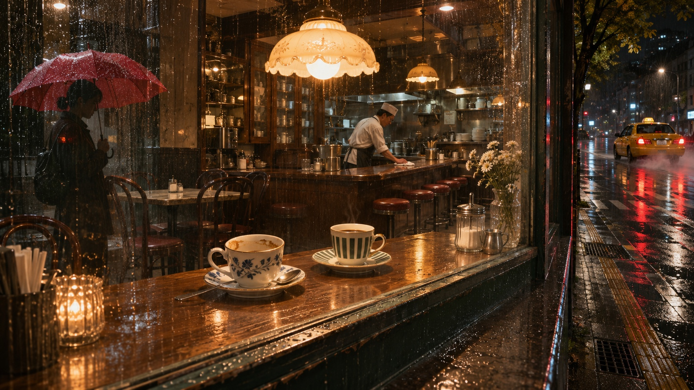

Light Table
비 오는 밤의 식당에서 세 장면을 찾아보세요.
고른 순서가 나만의 이야기가 됩니다.
사진 원판불러오는 중

사진을 불러오지 못했습니다.
사진 위를 누르거나 드래그해 탐색하세요. 방향키로 미세 조정하고 Enter로 담을 수 있습니다.
비 오는 밤의 식당에서 세 장면을 찾아보세요.
고른 순서가 나만의 이야기가 됩니다.

사진 위를 누르거나 드래그해 탐색하세요. 방향키로 미세 조정하고 Enter로 담을 수 있습니다.